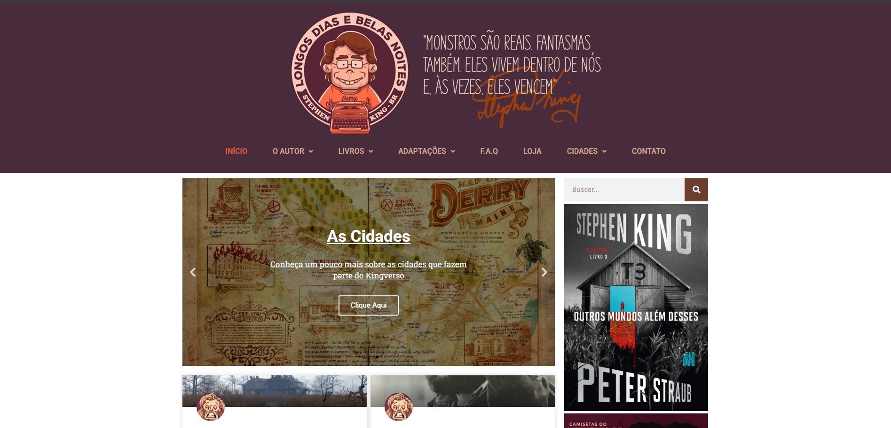
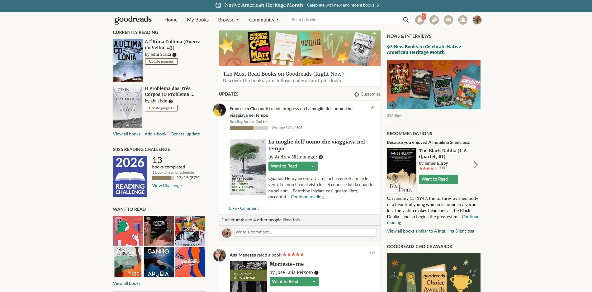
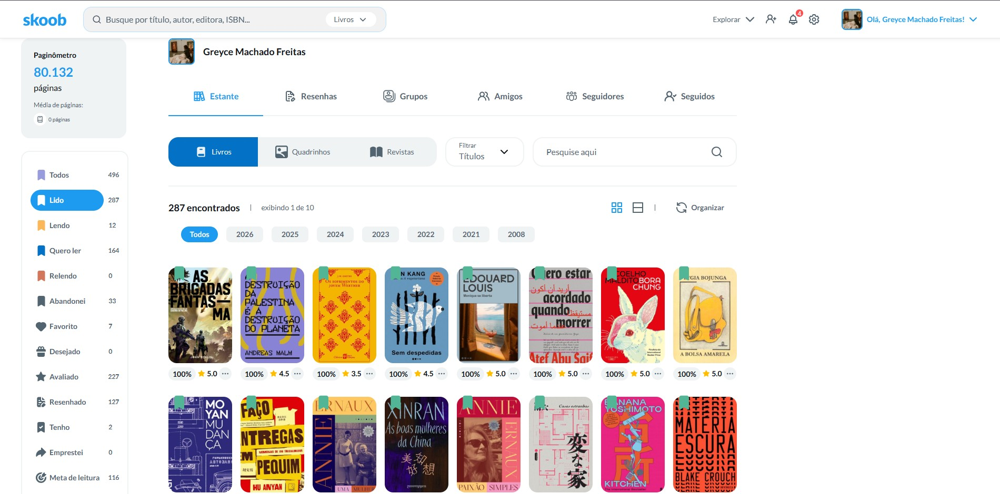
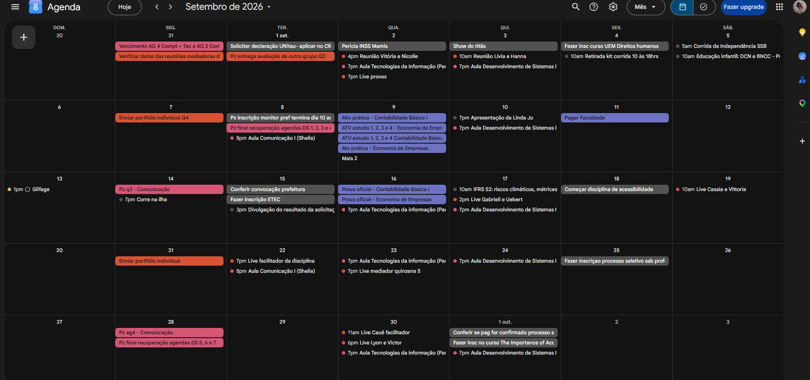

É uma comunidade de auxílio ao foco do estudante, baseada em recompensas.
Nela você pode estudar com amigos e pessoas do mundo inteiro.
Para os fãs brasileiros de Stephen King, esse site é um guia do multiverso do
autor, além de um informativo e curiosidades sobre suas obras.

Acesse o sitePara os leitores assíduos, o Goodreads é uma plataforma de registro e monitoramento
de leitura.

Acesse o siteDiferente do Goodreads, que é uma plataforma com usuários predominantemente
estrangeiros, o Skoob tem uma comunidade brasileira e possui o mesmo propósito,
conectar leitores e monitorar leituras.

Acesse o sitePor fim, o Google agenda é o melhor amigo do estudante, nele é possível organizar
compromissos futuros, adiocionar alertas e organizar lives e tarefas.

Acesse o site